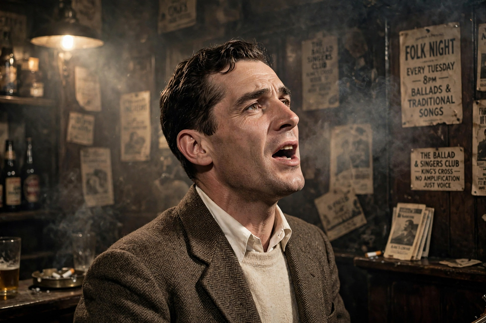

| Ewan MacColl | |
| Born | James Henry Miller, 25 January 1915, Salford, Lancashire, England |
|---|---|
| Died | 22 October 1989 (aged 74), London, England |
| Occupations | Folk singer, songwriter, actor, playwright, activist |
| Known for | "Dirty Old Town", "The First Time Ever I Saw Your Face", the Radio Ballads |
| Spouse | Peggy Seeger |

Ewan MacColl (born James Henry Miller; 25 January 1915 – 22 October 1989) was an English folk singer-songwriter, folk song collector, labour activist, actor and playwright. He was a central figure in the second British folk revival and the writer of songs such as "Dirty Old Town" and "The First Time Ever I Saw Your Face".
Born in Salford to Scottish parents, MacColl left school at fourteen and worked through a series of jobs while writing and agitating as a Communist. With his first wife Joan Littlewood he founded Theatre of Action and later the influential Theatre Workshop, which pioneered politically committed, ensemble-based British theatre.
MacColl learned hundreds of traditional songs from his parents and from Scots Traveller communities, and became a leading — sometimes controversial — champion of traditional styles of performance. With the BBC producer Charles Parker and his partner Peggy Seeger, he created the eight Radio Ballads (1958–1964), innovative documentaries weaving recorded speech, sound effects and song; the first, The Ballad of John Axon, dealt with railwaymen. His ballad opera "The Big Hewer" and songs like "Shoals of Herring" and "Freeborn Man" drew on working people's lives.
"The First Time Ever I Saw Your Face", written in 1957 for Seeger, became an international hit for Roberta Flack in 1972, earning MacColl a Grammy. MacColl and Seeger also ran the Singers' Club in London, and MacColl famously insisted performers should sing only songs from their own cultural tradition. His daughter was the singer-songwriter Kirsty MacColl.